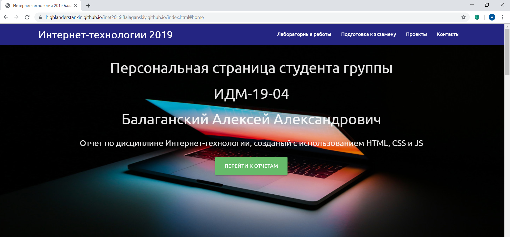

Команды на маршрутизаторе:
enable
configure terminal
interface fa0/0
ip address 192.168.2.1 255.255.255.248
no shutdown
exit
interface fa0/1
no shutdown
ip address 15.15.2.1 255.255.255.252
no shutdown

Рис. 2. Создание репозитория inet-2019
Затем все созданные файлы были загружены в репозиторий
В настройках репозитория был активирован хостинг Github Pages (рисунок 3).

Рис. 3. Настройка публикации на Github Pages
Внесенные в репозиторий (рисунок 4) изменения были успешно опубликованы хостингом Github Pages. Опубликованную страницу-отчет можно увидеть по соотвествующему адресу (рисунок 5).
Рис. 4. Внешний вид репозитория
| Параметр | LAN A | LAN B | LAN C |
|---|---|---|---|
| Количество узлов | 5 | 965 | 1024 |
| Ближайшая сверху степень двойки | 3 | 10 | 11 |
| Маска (префиксная) | 29 | 22 | 21 |
| Маска (десятичная) | 255.255.255.248 | 255.255.252.0 | 255.255.248.0 |
| Адрес | 192.168.2.0 | 172.16.2.0 | 10.10.2.0 |
| SUBNET | 192.168.0.0 | 172.16.0.0 | 10.10.0.0 |
| HOSTMIN | 192.168.3.1 | 172.16.3.1 | 10.10.3.1 |
| HOSTMAX | 192.168.2.5 | 172.16.3.254 | 10.10.7.254 |
| BROADCAST | 192.168.2.6 | 172.16.3.255 | 10.10.7.255 |